Alumini
("Success is not final, failure is not fatal: it is the courage to continue that counts.")
Our few Alumni

Dr. Kamal Bunkar
Ph.D., M.Tech., B.E.
Director of ICS
Total Experience: 19 Years
Publications:
Email:kamal.bunkar@gmail.com
Phone: 9827286303
Director of ICS, Vikram University, Ujjain
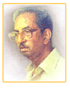
Vishnu Shridhar Wakankar
Indian archeologist
Awarded by "Padmashree" in 1975
(Wakankar is credited with the discovery of the "Bhimbetka rock caves" in 1957 and the Kayatha culture in 1964)
G.D.(Art),M.A. and Ph.D.
In 2003, UNESCO inscribed the Bhimbetka rock caves as a World Heritage Site. The Bhimbetka rock caves exhibit one of the earliest traces of human life in India.

V.K. Chaturvedi
Mechanical engineer and nuclear power expert.
The Government of India awarded him the fourth highest civilian honour of the "Padma Shri" in 2001.
He is a former Chairman and Managing Director of the Nuclear Power Corporation of India Limited (NPCIL).
He has also been a member of the Board of Governors of WANO for two years.
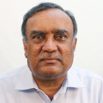
Professor Boyapati Manoranjan Choudary
The apex agency of the Government of India for scientific research,
Awarded him the "Shanti Swarup Bhatnagar Prize" for Science and Technology
one of the highest Indian science awards, in 1990, for his contributions to chemical sciences.
Indian chemist
Boyapati Manoranjan Choudary (born 1946) is an Indian inorganic chemist and a former senior scientist at Indian Institute of Chemical Technology.
he founded Ogene Systems in 2005 where he serves as the managing director.
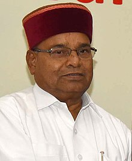
Thawar Chand Gehlot
Indian politician
13th Governor of Karnataka
being the first person serving as the Governor of Karnataka from Madhya Pradesh.
He also served as the Minister of Social Justice and Empowerment from 2014 to 2021.
He was also the Leader of the House in the upper house of Indian Parliament.
He was a member of the Parliamentary Board and the Central Election Committee of the BJP.
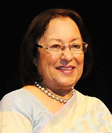
Najma Heptulla
Indian politician
16th Governor of Manipur
She was a six time member of the Rajya Sabha.
the upper house of the Indian parliament, between 1980 and 2016,
and Deputy Chairman of the Rajya Sabha for sixteen years when she was a member of Congress.
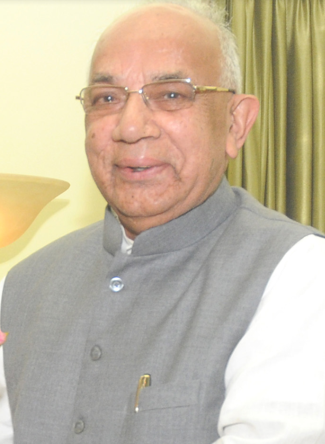
Kaptan Singh Solanki
Indian politician
15th Governor of Haryana
17th Governor of Tripura
he was the member of the Parliament of India representing Madhya Pradesh State in the Rajya Sabha,
the upper house until May 2014. He studied at Vikram University, Ujjain, P.G.B.T.

Vijay Kumar Patodi
Indian mathematician
He was the first mathematician to apply heat equation methods to the proof of the index theorem for elliptic operators.
who made fundamental contributions to differential geometry and topology.
He was a professor at Tata Institute of Fundamental Research, Mumbai (Bombay).
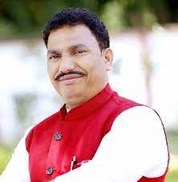
Chintamani Malviya
M.A., M.Phil., Ph.D. Vikram University
Member of the Bharatiya Janata Party
Has won the 2014 Indian general elections from the Ujjain (Lok Sabha constituency).
He had published a booked called Deendayal Upadhyay Darshan Aur Darshnik.
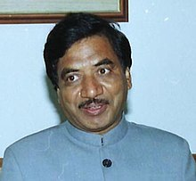
Dr. Satyanarayan Jatiya
Indian politician
Ministry of Labour and Employment (India)
He was elected to the Lok Sabha seven times from Ujjain as a member of Bharatiya Janata Party, and served one term (2014–2020) in Rajya Sabha.
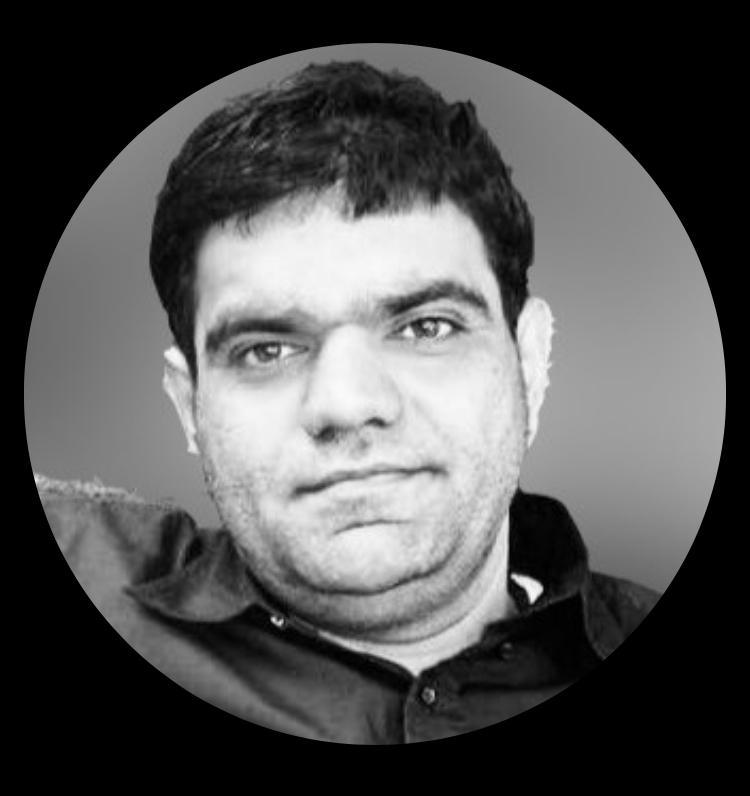
Mr. Anadi Upadhyay
Senior Director
Application Development, Oracle Corporation
USA
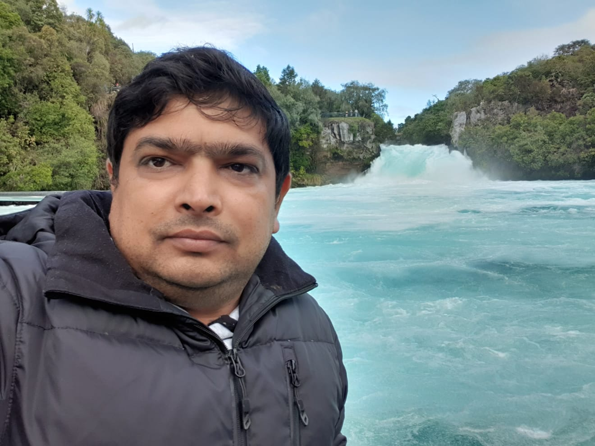
Mr. Abhishek Tripathi
IT Consultant
SPARK
New Zealand
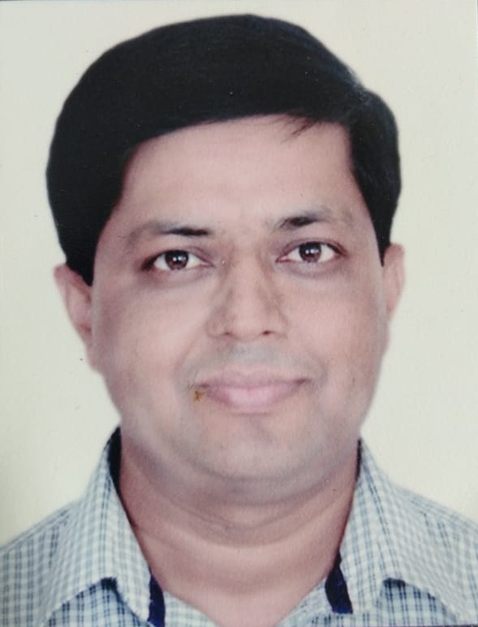
Mr. Ashutosh Kumar
Project Manager
Tata Consultancy Services
Frankfort, Germany
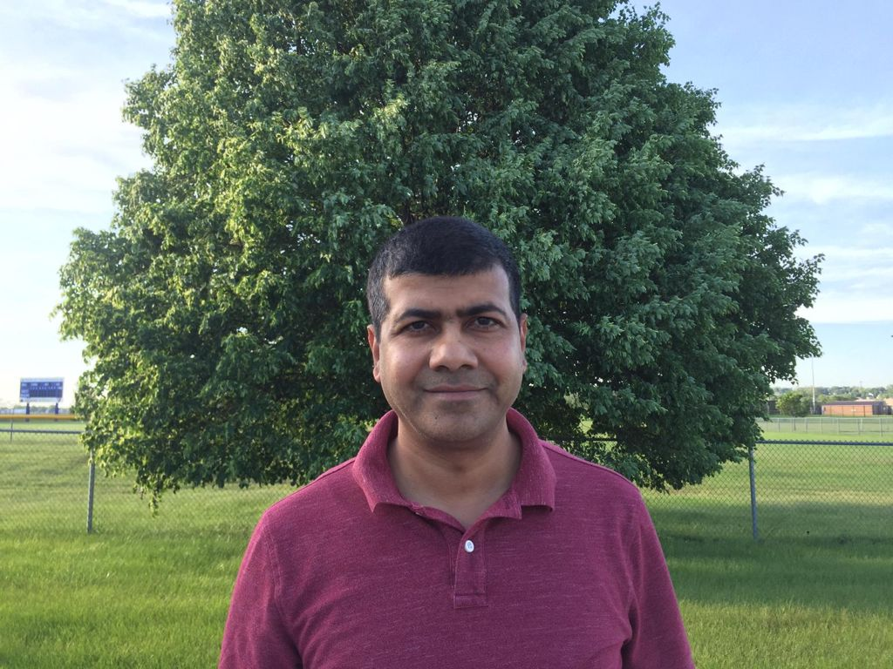
Mr. Pravin Taralkar
Software Developer
John Deere
USA
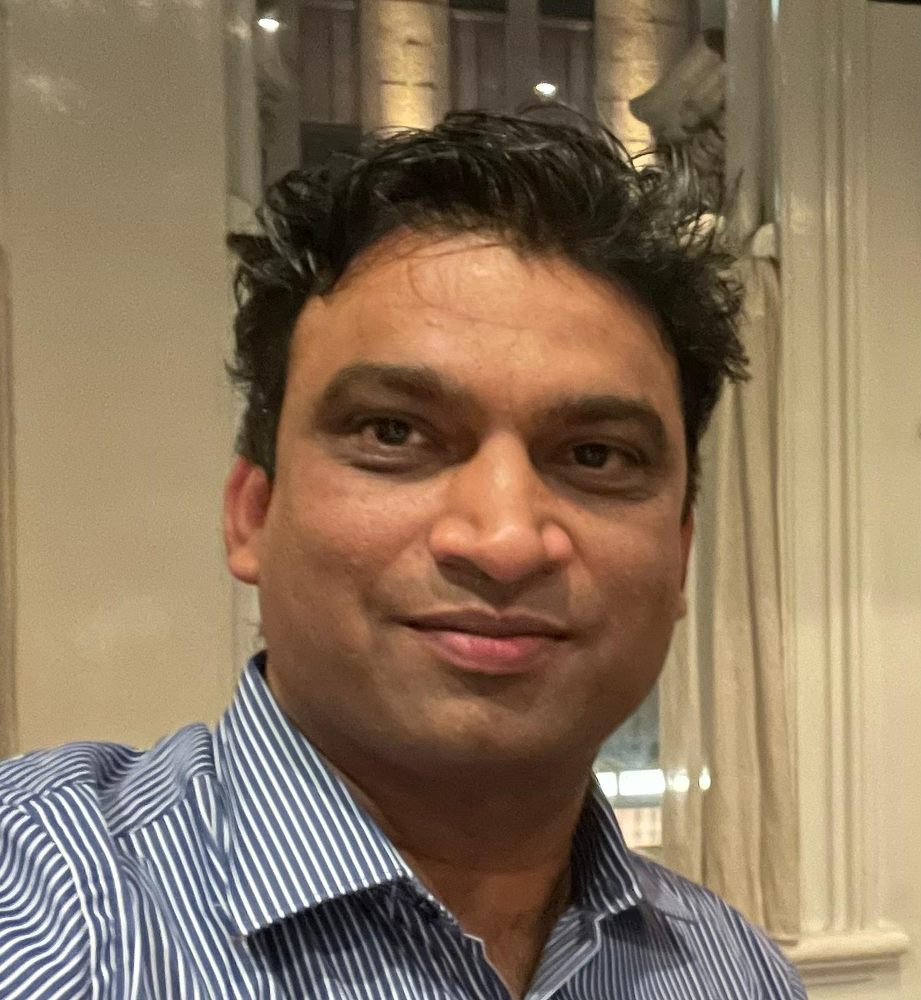
Mr. Subodh Shrivastava
Service Architect
Cornerstone OnDemand
Sydney Australia
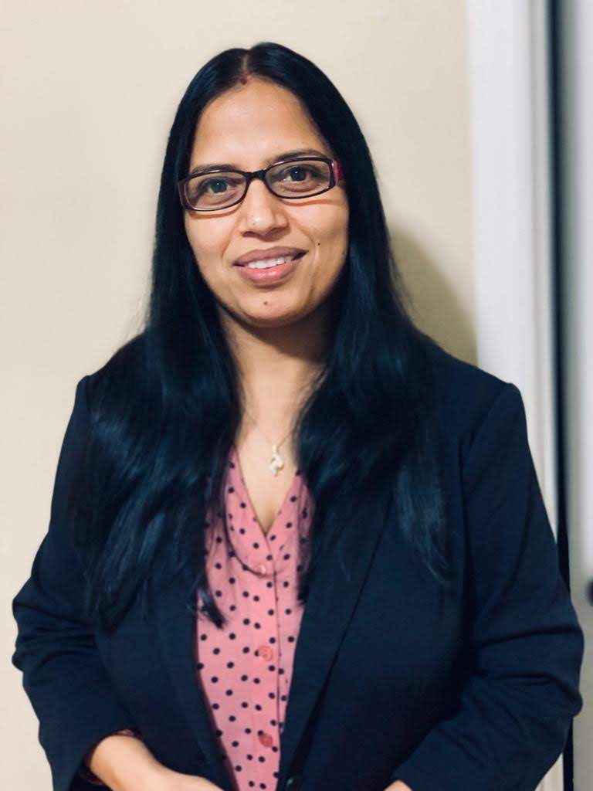
Ms. Archana Shukla
BBNT
Charlotte North Carolina
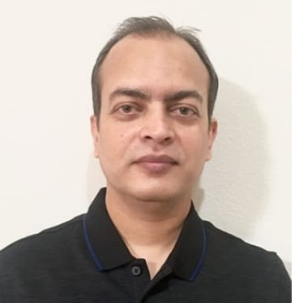
Mr. Chandan Kumar
Virtusa
Tampa Florida, USA
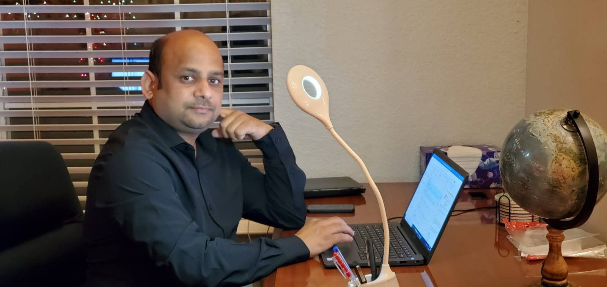
Mr. Ajaiya Kumar Pandey
Manager
Accenture
Dallas, TX , USA

Mr. Ashish Jain
Director - Delivery
Virtusa Corporation
Boston, USA
About Us
Institute of Computer Science with its premier objective to impart quality education in the area of computer science,
continuously meeting its objective since 1989. Keeping the goal to deliver the latest and relevant knowledge with the
practical aspects, institute has successfully completed more than 24 years of establishment.
© 2023 Copy Rights Director, Institute of Computer Science,Vikram University Ujjain-456010 All Rights Reserved
Phone: +91 7342511475
Email: icsvikram2020@gmail.com
Developed by: Bhavesh Pandole
CONTACT US